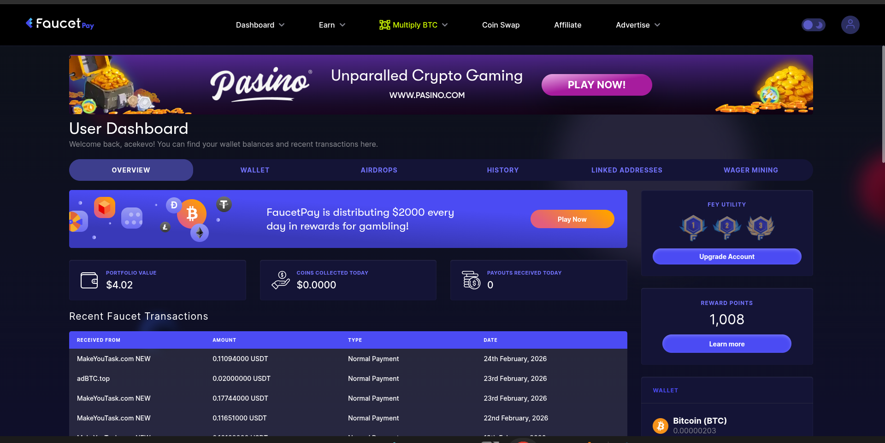
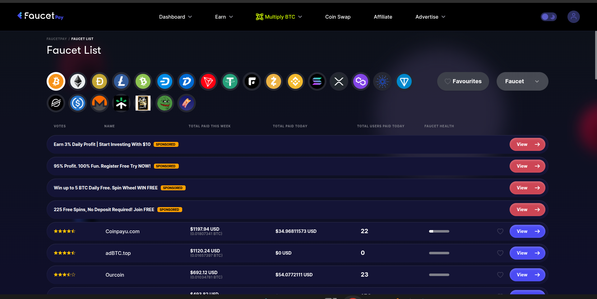
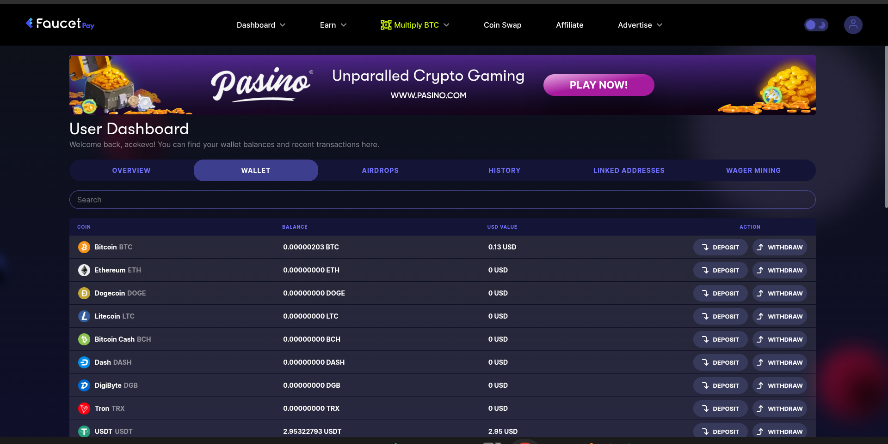
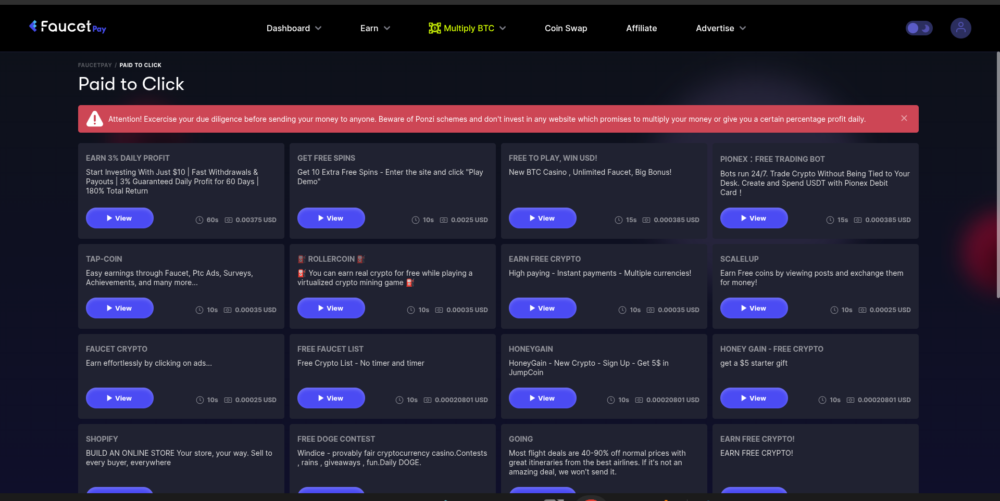

Disclosure
This article contains referral links. If you sign up through our links, we may earn a small commission at no cost to you. See our full disclaimer.
FaucetPay is the micro-wallet that bridges crypto faucet earnings to real-world cash. You collect satoshis from faucets into FaucetPay, then convert to Bitcoin or another coin and send to an exchange (like Coinbase) to sell for USD. The full withdrawal chain takes 3–5 steps but is straightforward once set up.
The Problem Nobody Talks About
You've started using crypto faucets. You're clicking, claiming, accumulating. Your balance on FireFaucet is growing. Your FaucetCrypto stash is building up. It feels like progress.
Then you ask the obvious question: how do I actually get this money?
And that's where most beginner guides go quiet. The faucet sites tell you to "withdraw to your wallet" — but if you try to send $0.50 worth of Bitcoin directly to a regular wallet address, the network transaction fee will eat most of it. Sometimes all of it. You'd be paying $2 to move $1.
This is the problem microwallets solve. And FaucetPay is the best one in the space right now.
What Is a Microwallet, and Why Do You Need One?
A microwallet is a custodial wallet designed specifically to accumulate tiny crypto payments off-chain — meaning without the fees of actual blockchain transactions. Faucet sites pay into your microwallet instantly and for free. The microwallet holds your balance until you're ready to move it somewhere real.
Think of it as a collection jar. You wouldn't run to the bank every time you find a coin on the street. You drop it in the jar, let it build up, and then make one worthwhile trip when the jar is full.
Without a microwallet:
- Every faucet withdrawal triggers an on-chain transaction
- Transaction fees often exceed what you earned
- Small balances are effectively trapped — too small to move profitably
With a microwallet like FaucetPay:
- Faucets pay you instantly, with zero fees
- You accumulate across multiple coins and multiple sites in one place
- You withdraw on your terms, when the balance makes it worthwhile
Enter FaucetPay
FaucetPay has been the de facto standard microwallet since 2019. If a faucet site is legitimate and active, there's a very good chance it pays out through FaucetPay. That's not a coincidence — it's because FaucetPay built the infrastructure the whole ecosystem runs on.
When you sign up, you get a unified dashboard that tracks your balance across multiple cryptocurrencies, shows your recent transaction history, and gives you a single withdrawal address for each coin.

Every faucet payment shows up in your transaction history in real time. You can see exactly which site paid you, how much, and when — useful for tracking which sites are worth your time.
The Faucet List — Your Cheat Sheet for Finding Legit Sites
One of the most underrated features on FaucetPay is the Faucet List. It's a directory of every faucet site that integrates with the platform — and it's one of the best tools available for finding legitimate sites with low payout thresholds.

Here's why this matters: the faucet space is full of scam sites that never pay. By filtering the Faucet List, you're only looking at sites that have a genuine FaucetPay integration — meaning they've set up a real withdrawal pipeline. That's a meaningful signal.
You can filter by coin, sort by payout amount, and quickly compare sites side by side. If you're ever wondering which Bitcoin faucets actually pay, or which DOGE faucets have the lowest thresholds — start here, not with a random Google search.
Pro Tip
Use the Faucet List to build your daily rotation. Filter to your preferred coin, sort by payout, and pick 3–5 sites with consistently low thresholds. That's your stack.
The Wallet — Managing Your Coins and Addresses
FaucetPay supports a wide range of coins: Bitcoin, Ethereum, Litecoin, Dogecoin, Tron, Dash, DigiByte, Bitcoin Cash, USDT, and more. Each coin has its own dedicated address within your account.

Each of those addresses is what you register on your faucet sites. When you sign up for FireFaucet, you give it your FaucetPay BTC address. When you sign up for a DOGE faucet, you give it your FaucetPay DOGE address. All payments flow into the same dashboard.
Managing Addresses Across Sites
This is a maintenance task you should build into your routine. If you have accounts on five or six faucet sites, each of those sites is holding your FaucetPay address. That's fine — until something changes.
- If FaucetPay ever issues new addresses, update every site immediately or payments will fail
- When you add a new coin to your FaucetPay wallet, register the address on any relevant faucet sites right away
- Periodically check that each site still has the correct address — a mismatch means lost payments
Keep a simple note with which address is registered on which site. It takes five minutes to set up and saves real frustration later.
Coin Swap — Consolidate Before You Withdraw
After a few weeks of earning across multiple faucets, you'll have small amounts spread across several coins. Maybe $0.80 in DOGE, $0.50 in TRX, $0.30 in LTC. Each balance is too small to withdraw efficiently on its own.
FaucetPay's Coin Swap feature lets you convert between supported coins at a low fee — directly within the platform, without touching the blockchain. Consolidate everything into one coin (Bitcoin or USDT are the most practical), build that balance up to a meaningful amount, then make a single withdrawal.
This matters because every on-chain withdrawal has a network fee. One withdrawal of $5 in Bitcoin is far more efficient than five withdrawals of $1 in five different coins. The swap fee is small. The saved transaction fees add up.
The $5 Rule — Don't Treat FaucetPay Like a Bank
Important: Keep Your Microwallet Balance Low
FaucetPay is a custodial service — they hold your crypto on your behalf. That means if something goes wrong on their end, your balance is at risk. Never keep more than $5 in your FaucetPay wallet at any time. Withdraw regularly to an exchange or self-custodied wallet as soon as you hit that threshold.
This isn't pessimism about FaucetPay specifically — it's a general rule for any custodial micro-service. FaucetPay has been operating since 2019 and has a solid track record. But the principle stands: microwallets are for accumulation and transit, not storage.
Think of the $5 threshold as a trigger. When your balance hits $5, you move it. Simple, repeatable, safe.
The Exit Path: From Microwallet to Bank Account
Here's the full journey laid out step by step:
- Earn on faucet sites — claims flow automatically into your FaucetPay wallet
- Accumulate — let the balance build across coins, use Coin Swap to consolidate if needed
- Hit $5 — trigger the withdrawal
- Withdraw to a trusted exchange — send your crypto to Binance, Coinbase, Kraken, or whichever regulated exchange you use
- Convert to fiat on the exchange — sell your crypto for your local currency
- Withdraw to your bank — transfer from the exchange to your linked bank account
That last step — exchange to bank — is where the real-world connection happens. Your micro-earnings only become spendable money when they hit an exchange that's connected to the traditional financial system.
Choosing an Exchange
Use a regulated exchange that operates in your country and supports direct bank withdrawals. The key features you need:
- Bank withdrawal support — some exchanges only support crypto-to-crypto
- Accepts small deposits — faucet amounts are small; confirm there's no high minimum deposit
- Low withdrawal fees — compare fiat withdrawal fees between exchanges in your region
- Regulated and reputable — never use an obscure exchange for this step
What About the PTC Sites Inside FaucetPay?
FaucetPay also has its own PTC (Paid to Click) section listing earning opportunities directly on the platform. It's a convenient way to discover more sites while you're already managing your wallet. Worth a browse, but apply the same scrutiny you would to any new site.

Getting Set Up: The Quick Checklist
- Create a free FaucetPay account at faucetpay.io
- Go to your Wallet tab — note your address for each coin you plan to earn
- Register those addresses on each faucet site you use
- Browse the Faucet List for additional sites worth adding to your rotation
- Set yourself a reminder to check address accuracy monthly
- Connect a trusted exchange account for when you're ready to cash out
Create your FaucetPay account:
Join FaucetPay FreeReferral link — we may earn a commission at no cost to you.
Final Thoughts
Bottom Line
FaucetPay is the bridge between micro-earnings and real money. Without it, tiny faucet payouts stay trapped — too small to move, too expensive to withdraw. With it, every small claim accumulates toward a real withdrawal. Set it up before you start earning anywhere else, keep your balance under $5, manage your addresses consistently, and always have a clear exit path through a trusted exchange. That's the whole system.
Related Reading
- FaucetPay Full Review — deeper look at features and ratings
- FireFaucet Review — one of the best FaucetPay-connected earners
- FaucetCrypto Review — another strong FaucetPay integration
- Complete Faucets Guide — all the best faucet sites
- More Blog Posts
Was this article helpful?